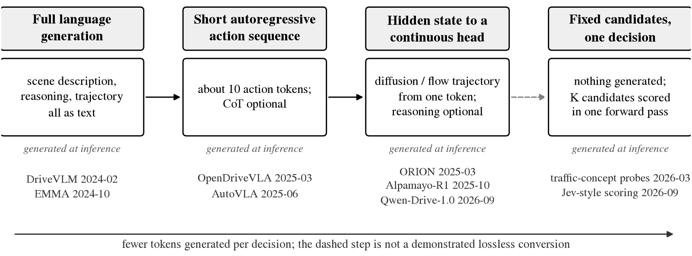
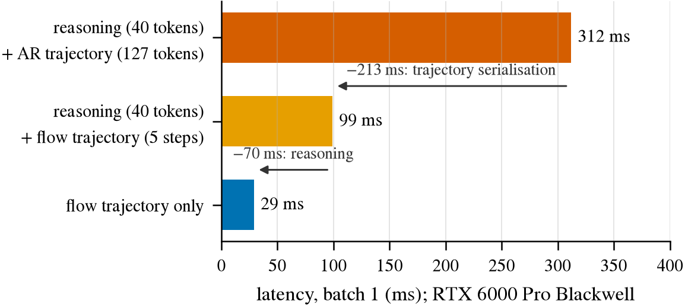
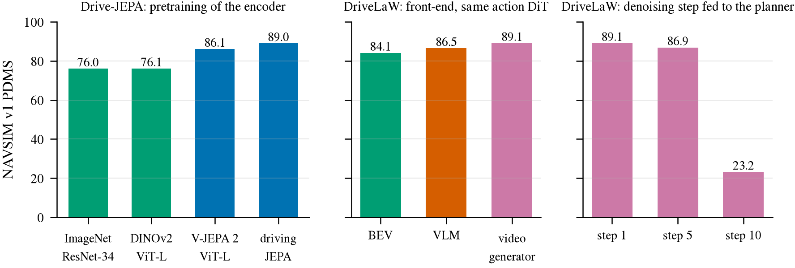
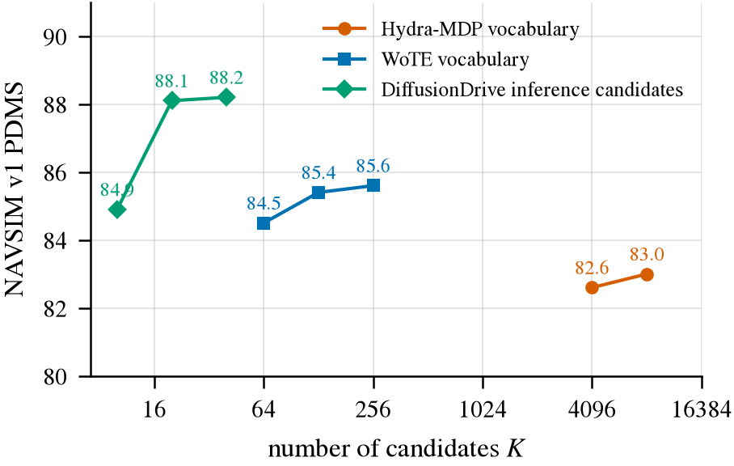
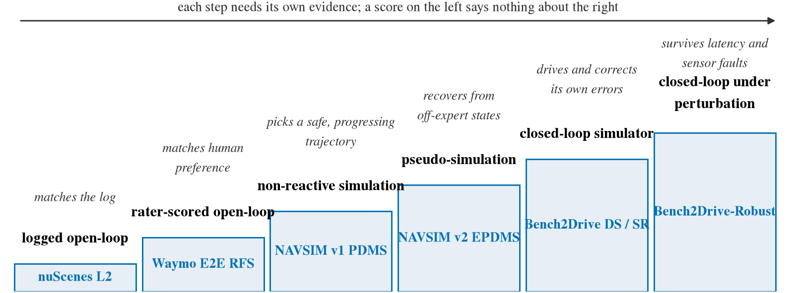

文献现状：薄 head、反事实与视频生成（2026-09）
核心结论（截至 2026-09 文献基线）： 1. 预训练表征包含大量几何与运动先验，但可读性、可执行性与追加计算需求互不相属： 冻结视觉编码器接简单回归头（FROST-Drive）在 Waymo E2E 官方测试集上达 RFS 7.856 进入微调 VLM 中游，但其 ADE@5s 为 3.565 m（全场垫底）；人类偏好打分（RFS）高不代表几何精度高，开环拟合好更不保证闭环可纠错。2. 领域演化方向是「重新分配在线与离线计算」，而非单向删除生成： 生成式预训练负责注入时空与几何先验；推理时通过连续 flow 动作专家（Alpamayo-R1，5 步 flow 延迟仅 99 ms）或提取早期去噪步特征（DriveLaW，t=1 特征 PDMS 89.1 vs t=10 23.2）即可省去昂贵的像素与自回归解码。文本轨迹序列化是自回归延迟主因，提速无需牺牲慢思考（reasoning）。3. 反事实配对测试暴露端到端规划器的普遍因果混淆： Beyond the Leaderboard（2609.22582）对 246 个正前方行人在规划路径上的场景进行抹除，仅 1.9% 的公开模型呈现真实避让；无关光度扰动导致的轨迹偏离比真实因果干预高 2–4 倍。目前文献仅覆盖图像编辑造对，仿真物理重渲染、逐帧对齐且带特权专家两侧真值的配对训练仍属空白。4. 视频生成模型表征擅长点追踪与低层几何，直觉物理处于随机水平： WAN-14B 点追踪（TAP-Vid 51.2）领先判别模型（DINOv3 41.1、V-JEPA2 33.8），但在直觉物理推理（IntPhys2）上 LTX-Video 仅 48.4（VideoMAE 73.9、V-JEPA2 66.0）；画面逼真度与物理一致性呈负相关（r = -0.46）。生成式先验是局部几何运动补丁，不能作为可靠物理动力学底座。5. 分解世界模型（Factorized WM）的新意边界明确： 解析自车运动学重投影（comma 2504.19077）与世界模型自车动作低估（低估 50–190 倍）已有先例；新意集中于仅学 glue 与反应残差、反应残差仅由仿真 fork 对监督、外生由工业基座微调且严禁承担自车效应、并用干预真值归因日志混淆。
相关诊断与设计导航：
openpilot 适配与跨榜诊断 ：openpilot 接入矩阵、执行接口缺陷与四大能力缺口。Bench2Drive 闭环与控制 ：TFv6 评估、两通道表征与闭环控制开销。转弯增益与尺度校准 ：navtest 增益、天花板测试与控制链路限幅分析。四个方向诊断 ：急弯内角、宽弯余量、近距测距与夜间归属。原始调研报告存档（只读）：research/lit/；相关决策记录：research/decisions/018.md、019.md、020.md、021.md、139.md、141.md。
一、输出接口演化与四种「变薄」消融
端到端自动驾驶模型在推理阶段的生成量普遍缩减，但从长文本到薄 head 的演化并非简单线性替代。

图一：输出接口演化谱系（f2）。从完整自回归语言/推理生成，到短 action token、隐状态连续生成 head，再到固定候选打分；各接口之间并非直接等价无损转换，亦非单纯线性继承。
1. 四类输出接口分类
完整长文本自回归（Full Generation） ：DriveVLM（2402.12289）、EMMA（2410.23262）。将场景理解、CoT 推理与自回归轨迹坐标混合在统一文本序列中输出。短自回归动作序列（Short Autoregressive Action Sequence） ：OpenDriveVLA（2503.23463）、AutoVLA（2506.13757）。AutoVLA 将 5 秒轨迹压缩为 10 个物理动作离散 token，但依然保持自回归生成机制。隐状态接入连续生成 Head（Hidden State to Continuous Generative Head） ：ORION（2503.19755）、DiffVLA（2505.19381）、Alpamayo-R1（2511.00088）、Qwen-Drive-1.0（2609.00111）。从 backbone 提取 ego token 或 KV 特征，接连续 diffusion 或 flow-matching planner。固定候选打分（Fixed Candidates Scoring） ：Jev（TypeSafe 2026-09-15）、jev-visual（hr98w/jev-visual 2026-09）、交通概念探针（2603.06054）。共享前缀特征后对 K 个候选做单次并行打分。
2. 四种不可互换的「变薄」消融
消融环节 实际省去了什么 不能推导出的结论 代表文献与证据 RGB decoding 不将预测的未来 latent 还原为像素 未来预测/世界模型无用 LAW（2406.08481）辅助未来预测使 PDMS 77.5 → 84.6；DriveLaW（2512.23421）部署只缓存特征不解码 Textual trajectory 不用自回归逐 token 输出坐标字符 推理（reasoning）无用 Alpamayo-R1（2511.00088）将自回归轨迹换成 5 步 flow 降耗 213 ms，同时保留 reasoning Explicit CoT 不逐步生成自然语言推理文本 长尾困难场景能力不变 AutoVLA（2506.13757）低数据量下 CoT 有益；Alpamayo-R1 reasoning 版本在困难场景提升 12% Latent rollout 不显式单步推演未来中间环境状态 行动后果（Action Consequences）信息仍在 World4Drive（2507.00603）推理期对多意图做 rollout 打分；NTR（2605.31116）仅在训练期做 token 重建
3. Jev 风格候选打分接口的有效性与边界
TypeSafe 于 2026-09-15 发布 Jev，核心基于 parallel sampler 与 RLCD；开源复现（hr98w/jev-visual 实现了共享前缀多模态预填充与 fork cache；razorback16/openjev 使用 DiffusionGemma 掩码画布去噪）。但用于驾驶控制时存在明确失效机制：
候选集内 softmax 仅表示给定选项内的相对概率，不等于真实动作的安全置信度；若最优安全动作未包含在候选集中，模型仍会以高置信度选择错误路径。
候选描述格式、排列顺序及 token 长度差异均引入系统性偏差；粗分类（左/直/右）混合了导航意图、车道选择与瞬时控制指令。
截至 2026-09，公开文献中未找到 经过受控验证的 Jev 风格端到端驾驶闭环复现。
二、真实延迟基准与推理瓶颈剖析
规划头（head）极薄不代表系统端到端实时。完整延迟必须涵盖图像预处理、视觉编码器、多模态前缀 prefill 与控制执行全链路。

图二：Alpamayo-R1 延迟与消融分解（f3）。基于 RTX 6000 Pro Blackwell 统一硬件测试。将 127 个自回归轨迹 token 替换为 5 步 flow 解码器即可将延迟从 312 ms 锐降至 99 ms；序列化解码是最大瓶颈，保留 40 个 reasoning token 并未阻碍达到 ~10 Hz 控制频率。
1. 公开端到端与规划器延迟横向对比
模型路线 可核实延迟 硬件环境与测试口径 关键特征与边界 AutoVLA（2506.13757） fast 1.072 s；slow 10.518 s 未指定单卡型号；自回归生成 10 个动作 token 输出 token 极少依然远达不到实时 Alpamayo-R1 自回归（2511.00088） 312 ms RTX 6000 Pro Blackwell；含 40 reasoning + 127 轨迹 token 轨迹序列化生成占 213 ms 耗时 Alpamayo-R1 flow planner（2511.00088） 99 ms 同上；保留 40 reasoning token，5 步 flow matching 无需剔除 reasoning 即可实现 ~10 Hz Alpamayo-R1 纯 flow（2511.00088） 29 ms 同上；无 reasoning token，纯轨迹 flow 生成 速度基线，但损失长尾难例能力 MindVLA-U1（2605.12624） slow 2594 ms；fast 108 ms；action 103 ms H200 单卡，batch=1；含视觉编码 双分支结构，快速分支近 10 Hz Fast-dDrive（2605.23163） 均值 1919 ms；SGLang 优化 665 ms H100，batch=1；prefix 缓存复用 离散扩散自回归依然偏慢 DiffAdapterVLA（2609.15322） 80.4 ms / 样本（batch wall-time 643 ms） 多 GPU 并行，batch=8 均摊 批均摊非单请求实时延迟 WoTE（2504.01941） 18.7 ms（K=256 词表打分） L20；BEV 特征 + 轨迹词表打分与精修 轻量词表推理速度极快 DiffusionDrive（2411.15139） 45 FPS（全链路 ~22 ms；去噪 7.6 ms） RTX 4090；20 anchor + 2 步截断扩散 轻量 backbone + 截断扩散 冻结主干极薄线性/MLP Head 无 同输入、同硬件公开数字缺失全链路端到端测量 只测 head 会严重忽略视觉与前缀开销
三、前端表征：探针、遗忘与消融对照

图三：同 Planner 换前端的消融对比（f4）。左：Drive-JEPA 在相同规划架构下更换预训练编码器（ImageNet 76.0、DINOv2 76.1、V-JEPA 2 86.1、driving JEPA 89.0）；中：DriveLaW 在相同 Action DiT 下接入 BEV、VLM 与视频生成特征；右：DriveLaW 特征去噪步选择。结论：前端训练目标比架构名称更关键，越晚的生成去噪步越不利于驾驶决策。
1. 前端表征消融核心发现
Drive-JEPA（2601.22032） ：在相同规划器下，ImageNet ResNet-34（76.0）与 DINOv2 ViT-L（76.1）得分几乎相同；转向视频预测时空的 V-JEPA 2 ViT-L 跃升至 86.1 PDMS，专为驾驶适配的 driving JEPA 达 89.0 PDMS。视频级时空表征对轨迹预测带来质的跨越。DriveLaW（2512.23421） ：在相同 Action DiT 下，早期去噪步特征效果最好（t=1 达 89.1 PDMS，t=5 达 86.9 PDMS），而在接近最终图像的 t=10 步发生严重坍塌（23.2 PDMS）。证明宏观运动先验存在于早期高噪声状态，后期视觉细节去噪挤占或混淆了控制决策信息。FROST-Drive（2601.03460） ：冻结 InternVL3 vision encoder 在自定义验证集上达 RFS 8.17，大幅高于冻结 ImageNet ViT（7.39）；表明视觉编码器本身已具备强先验，无需 LLM 参与即可支撑高打分。
2. 探针七大先例与边界检查
先例工作 arXiv / 日期 已解决的问题 尚未覆盖的空白 A. Visual Concepts Probing 2603.06054（2026-03） 在轻量 VLM 上逐层线性探针测物体存在、计数、空间关系与航向；激活引导（steering） 未测真实交通时序证据、连续动力学与动作后果 B. Hidden in Plain Sight 2506.08008（2025-06） 证明 VLM 生成错误往往是 readout failure 而非视觉表征损坏 未测未来动作或度量动力学 C. Linear Mechanisms 2601.12626（2026-01） 证明视觉信息可在网络深层从 visual token 转移至 text/prompt token 未验证连续运动数值是否沿同一路径迁移 D. Spatial Intelligence 2605.28132（2026-05） 冻结 VLM 与视频生成模型接轻量 head 对比几何与相机运动 非驾驶规划目标，无真实轨迹对照 E. Anchor-Align 2607.13429（2026-07） 机器人 VLA 适配中追踪动作可读性与表征漂移（第 22 层 R² 0.60） 研究已适配模型，非未适配 VLM 在交通动力学上的表现 F. Symbolic Probing 2502.04558（2025-02） 对 OpenVLA 逐层探测符号状态，打破「浅层物体、深层动作」二分法 面向机器人操作符号状态 G. FROST-Drive 2601.03460（2026-01） 冻结 VLM 视觉编码器接轨迹头验证部署可行性 未调用 LLM 中间层 hidden state
3. 逐层探针性能下降的四种机制
在网络深层探针准确率下降，不能简单等同于「空间表征在深层丢失」：
未进入视觉表征 ：低层编码器自始至终未捕获该几何信息。表征迁移而非丢失 ：信息从视觉 token 重定位到了后续文本或 prompt token（2601.12626）。线性不可读失配 ：信息依然存在，换用非线性轻量 MLP 或特定 pooling 即能完整复原（2506.08008）。深层表征真正弱化 ：在特定 head 和训练目标下难以抽取（如语言对齐导致方向感知退化，2603.06054）。
4. Ego-Status Shortcut 方法论约束
Is Ego Status All You Need for Open-Loop End-to-End Autonomous Driving? （2312.03031）指出：在 nuScenes 上仅使用当前速度、加速度与偏航角速度等自车运动学历史状态，不看任何图像输入，开环 L2 指标已具备极强竞争力。因此，文献规范确立：任何宣称「视觉/预训练表征包含有效驾驶信息」的结论，其增益必须严格扣除 ego-state-only baseline 后汇报 。
四、轨迹词表（Vocabulary）与候选容量 K
通过对轨迹库聚类构建固定词表（K anchors）并转化为打分问题，是保证 head 极薄的关键工程方案。

图四：轨迹候选数量 K 的边际收益扫描（f7）。DiffusionDrive（2411.15139）、Hydra-MDP（2406.06978）与 WoTE（2504.01941）公开曲线表明：K 翻倍的增益在数百之后迅速趋平（DiffusionDrive 从 20 增至 40 仅涨 0.1 PDMS）。系统性能瓶颈在于打分器的判别与排序能力，而非单纯增加几何候选覆盖度。
1. 词表主流方法横向对比
方法名称 候选容量 K 与构建方式 Scorer 监督目标 精修机制（Refinement） 基准表现 Hydra-MDP（2406.06978） K = 4096 / 8192；训练集轨迹 k-means 模仿距离 + 仿真子指标蒸馏 无精修 NAVSIM v1 PDMS 82.6 → 83.0 Hydra-MDP++（2503.12820） K = 8192 丰富规则子分数多任务蒸馏 无精修 NAVSIM v1 PDMS 91.0 DiffusionDrive（2411.15139） K = 20 个 anchor + 噪声初始化 Anchor BCE + 最优模式回归 2 步截断扩散去噪 PDMS 88.1；4090 上 45 FPS GoalFlow（2503.05689） K = 4096 / 8192 个终点目标 终点欧氏距离 + 可行驶区约束 目标条件 flow matching PDMS 90.3（5 步）/ 88.9（1 步） WoTE（2504.01941） K = 256；专家轨迹 k-means 胜者通吃回归 + 世界模型奖励 先轻量精修后综合评分 PDMS 88.3；L20 上 18.7 ms GTRS / ZTRS（2506.06664 / 2510.24108） K = 8192 / 16384 固定或动态轨迹 多子分数 BCE + 策略穷举优化 无 / 含动态生成 navhard 49.4 / 45.5 EPDMS Auto-JEPA（2607.29031） 记忆检索 Top-300 候选 Latent 匹配检索 + 规则打分 无额外生成 v1 91.3 PDMS；v2 navtest 89.1 EPDMS
五、Waymo E2E 官方榜单与评测协议
1. 官方评测协议口径（CVPR 2026, 2510.26125）
数据与分划 ：4021 个 20 秒片段（训练集 2037，验证集 479，测试集 1505），长尾稀有场景发生率低于 0.03%。TFRecord / E2EDFrame 格式。传感器与历史 ：8 环视相机；ego 历史 [-4s, 0s] 共 16 个状态（4 Hz，含 XYZ 位置、XY 速度与加速度）；路线意图为 4 分类（直行、左转、右转、未知）。预测契约与指标 ：输出未来 (0, 5] 秒共 20 个 XY waypoint（4 Hz，后轴坐标系）。核心指标 RFS（Rater Feedback Score） （与人工评分参考轨迹比对，远离所有合理轨迹时向下限惩罚衰减）；辅助指标 ADE@5s （对评分最高参考轨迹计算）。测试提交限制 ：每 30 天限交 6 次，测试集前 12 秒可见、后 8 秒隐藏。
图三：Waymo E2E 官方测试集格局（f5）。纵轴 RFS（7.5–8.05），横轴 ADE@5s（2.65–3.6 m）。FROST-Drive 凭借完全冻结的视觉编码器取得 7.856 RFS 挤入中游，但 ADE 为全场最差（3.565 m）；全模型解冻微调的紧凑模型 RAP（DINOv3-H+ 0.88B）综合表现最优；单前视视频生成器 SUV 达 7.94。
2. 可核实官方测试集代表成绩
方法名称 Backbone 与更新策略 输入配置与规划 Head RFS ↑ ADE@5s (m) ↓ 出处 / 日期 RAP DINOv3-H+（0.88B），Waymo 阶段全解冻 多相机 + 4s ego + 路线；多候选回归打分 8.043 2.646 2510.04333（2025-10） Poutine Qwen2.5-VL-3B；SFT + GRPO 强化学习 前视 3 相机 + 4s ego；自回归坐标生成 7.986 2.742 2506.11234（2025-06） SUV Wan2.2-5B 视频生成器 + 动作专家联合训练 仅单前视相机 ；视频特征 + flow action7.940 2.900 2608.03084（2026-08） Qwen-Drive-1.0 Qwen3.5-4B；驾驶适配后冻结，训 Planning Expert 前 3 相机 × 4 时刻；flow planning expert 7.910（SFT 7.78） 2.670（SFT 2.65） 2609.00111（2026-09） MindVLA-U1 Qwen3-VL-2B；视觉冻结，更新 LLM 与融合层 多相机；flow action + 语言输出 7.870（Base 7.77） 2.660（Base 2.67） 2605.12624（2026-05） FROST-Drive InternVL3 视觉编码器完全冻结 5 相机；轻量 temporal adapter + GRU 7.856 3.565 2601.03460（2026-01） Fast-dDrive Qwen2.5-VL-3B；更新主干 多相机；块离散扩散规划器 7.823 2.907 2605.23163（2026-05） UniPlan DiffusionDrive（约 60M 参数） 多相机；anchor 条件截断扩散 7.780 2.842 FROST Table 6 / 2510.26125 AutoVLA Qwen2.5-VL-3B；SFT + LoRA RFT 前 3 相机 × 4 时刻；自回归 10 动作 token 7.556 2.958 2506.13757（2025-06） OpenEMMA / LightEMMA zero-shot 开源 VLM 直接输出轨迹 多相机；无微调推理 5.158 / 6.517 未详细汇报 dVLM-AD（2512.04459 复现）
3. 榜单隐藏事实与陷阱
冻结视觉先验有效，但几何精细度垫底 ：FROST-Drive 证明冻结通用视觉编码器足以获得合规、合理的高 RFS，但因未深度端到端调整几何投射，其欧氏位移误差（ADE 3.565 m）显著劣于所有微调基线。缺少自车状态基线对照 ：官方榜单未设立 constant-velocity、纯自车历史或纯导航路线的对照组；nuScenes 上的 shortcut 现象在 Waymo 测试集上未建立完整检验。多视角增益未被严格证实 ：单前视的 SUV 达到 7.94，3 相机的 Poutine 达 7.986，5 相机的 FROST 达 7.856，8 相机的 NaiveEMMA 仅 7.528；相机视角数量并不支配成绩排名。
六、证据梯子与基准检验强度

图五：自动驾驶评测证据梯子（f9）。从左至右验证难度与外部效度递增。每向右跨越一步，均须排除上一层特有的作弊或捷径机制（nuScenes 的自车历史捷径、Waymo 的 RFS 偏好平滑代理、NAVSIM 的静态地图与非交互盲区），最终到达真实闭环与扰动鲁棒性检验。
1. 基准评测梯度与可利用缺陷
基准环境 核心考察目标 已知局限与被走捷径机制 代表算力与基线 nuScenes 开环 与日志轨迹的 L2 位移与碰撞代理 容易陷入自车运动学历史捷径（2312.03031） 特征可预先离线提取缓存 Waymo E2E 与多条人工评分轨迹的偏好贴合度（RFS） 开环静态代理；评分离散衰减不等于动态风险 FROST-Drive（冻结视觉 7.856） NAVSIM v1 非反应式仿真环境执行规划轨迹（PDMS） 其他交通参与者不响应；极易被静态地理记忆利用 World4Drive（8×3090，12 epochs） NAVSIM v2 伪仿真（含偏离专家状态后的恢复，EPDMS） 仍非真实多智能体闭环交互；v1 与 v2 指标不可混排 Drive-JEPA（planner 2×A30，预训练 8×H800 3天） Bench2Drive CARLA 完整物理多智能体闭环（DS、SR） 开环表现与闭环脱节；闭环对横向转弯控制极其敏感 AD-MLP 开环 L2 仅 3.64，闭环 SR 为 0.00% Bench2Drive-Robust 相机丢帧、定位漂移与控制延迟下的闭环 对「因薄而快」的直接物理压力测试（2605.18059） 多扰动注入重测
2. 关键基准审计：Driving on Memory（2608.31029）
Driving on Memory（2026-08）构建了一个完全不看当前相机画面的系统：利用冻结 DrivoR 提取的地点特征与历史位姿建立记忆库（Memory Bank，NAVSIM 约 6.3 GB），推理时仅通过当前位置检索旧特征。其在 NAVSIM v1/v2 上分数追平甚至超越当前领先的视觉感知系统，但在 Bench2Drive 与实车闭环中彻底崩塌。核心启示：NAVSIM 的高分主要奖励了静态道路结构先验与常见走法记忆，未严格检验动态障碍物感知 。任何以 NAVSIM 为证据的感知有效性宣称，都必须排除地理先验混杂。
3. 自适应计算（Fast/Slow Thinking）：Always-Think 并非上限
AdaThinkDrive（2509.13769） ：同模型下对比从不思考、始终思考与自适应思考。NAVSIM v1 PDMS 分别为 88.3 / 88.9 / 90.3 ，推理耗时 0.68 / 0.86 / 0.74 s。简单场景 84% 跳过思考，困难场景 96% 激活思考；全局慢思考反而引入更多推理噪声。ASSCG（2606.25509） ：通过轻量 gate 学习在关键时刻 Query / Cache / Drop 慢模型输出。在 nuPlan 闭环中，仅 19% 的时间调用慢模型即取得 67.28 DS，高于每帧无脑调用慢模型（65.00 DS）。
七、反事实配对与生成式编辑现状
1. 核心现象：公开 Planner 普遍忽略关键可见因子
测试来源 实验设置与扰动手段 定量测量结果 Beyond the Leaderboard（2609.22582，2026-09） 246 个 NAVSIM 规划路径上的近处行人，使用 SAM + LaMa 擦除；测试 6 个公开检查点（LTF、DiffusionDrive、DiffusionDriveV2、SimLingo、AutoVLA、Alpamayo-1.5） 仅 1.9% 的响应表现为真实主动避让；通行净空（clearance）变化中位数 ≤ 0.03 m；无关夜景光度变换导致规划偏离大 2–4 倍且方向随机。 CVAA / Counter-nuScenes（2607.16938，2026-07） 3062 对逐物体修补删除，评估 Alpamayo-1 删红灯 vs 删绿灯轨迹位移为 0.758 m vs 0.229 m，排名稳定性仅 6.4%。 CADET（2606.14438，2026-06） Query 级别目标扰动，SparseDrive 模型 因果相关 agent 与无关 agent 影响比为 9.5，但单帧中最显著的无关 agent 同样能轻易改变轨迹。 Auto-JEPA（2607.29031，2026-07） 同一帧内 mask 动态目标 vs 等面积随机背景 mask 动态目标的意图特征变化幅度是随机背景 mask 的 2.97 倍。
2. 图像编辑造对 vs 仿真配对现状
类型 代表工作 核心机制与数据 对自车状态的处理 真值动作标签来源 用于训练 图像编辑造对 Who Make Drivers Stop（2003.02425） 删目标 tracklet + 部分卷积修复 严格一致 有（Stop/Go 分类） 否 CoLT-Drive（2609.00242） Gemini-3-Pro 插入罕见物体（3536 对） 严格一致 3 名标注员人工仲裁 否（明确禁止） Beyond the Leaderboard（2609.22582） SAM + LaMa 删行人 + LiDAR 擦除 严格一致 无（仅测自身策略漂移） 否 仿真环境配对 Fail2Drive（2604.08535） CARLA 100 对路线，17 类 targeted shift 不一致 （闭环各自分散）特权专家检查可解性 否（Rule 1 明确禁止） ICR-Drive（2604.05378） 固定 seed/天气/交通，仅改指令文本 严格一致（重放） 无 否 How Can WM Counterfactual（2608.11601） CARLA 同一世界改自车 action / 事件触发 严格一致 仿真物理重跑真值 否（仅评测 WM）
3. 有效性威胁（Validity Threats）与已知防线
修复伪影（Inpainting Artifacts）成为新捷径 ：图像修补痕迹可解释 5–17% 的策略响应（2609.22582）。对策：在空旷路面贴安慰剂 patch，以其引起的轨迹漂移作为效应下界。删除残留 ：擦除后仍有 8.5% 的残留被独立检测器检出。对策：使用 COCO 预训练 Faster R-CNN 进行独立自动化验证。重渲染漂移混淆 ：纯神经重渲染本身即导致 0.03–0.11 pp 的碰撞率波动。对策：设立原始 / 神经重渲 / 重渲+编辑三臂对照（Challenger 2505.15880）。标签断言而非推导 ：构造场景不可盲目预设标签，须由特权规则专家（如 PDMLite）闭环验证其可解性。
4. 配对训练现状与空白
CF-Driver（2409.17605） ：在输入状态空间扰动并用 CARLA 专家重跑打标，但配对样本被当作普通模仿学习数据混入，缺少显式配对差结构 loss，亦未设立针对 hard-example reweighting 的严格对照 。双差目标（Relative Advantage Difference）尚属空白 ：直接对可见因子变化引起的动作偏好相对差值做损失约束，尚未在主流文献中实现。仿真配对样本微调向真实开环数据（Waymo/NAVSIM）的迁移增益至今缺乏严密发表证据。
八、视频生成模型当表征：能力边界与物理失真
1. 生成模型作为 Planner 表征现状
DriveLaW（2512.23421） ：LTX-Video DiT 特征接入规划 DiT，NAVSIM navtest 取得 89.1 PDMS ，高于 VLM 隐状态（86.5）与传统 BEV 表征（84.1）。但其 Video DiT 与 Planner 共同更新，非完全冻结；全流程耗时 0.71 秒。DriveWAM（2605.28544） ：基于 Wan2.2-TI2V-5B 全量微调，NAVSIM 达 90.1 PDMS，展现数据扩展潜力，但缺乏与 DINOv2 / SigLIP 的等参数量对照。DriveVA（2604.04198） ：唯一公开把视频生成先验推向 Bench2Drive 闭环的工作（PDMS 90.9），但基座模型未公开且缺乏判别式编码器对照。完全冻结通用视频生成模型 + 薄 head 在主流驾驶基准上的严格并排依然空缺。
2. 生成式表征到底编码了什么
表征能力层次 实测证据与对比 文献裁决结论 低层几何与稠密点追踪 DiTracker（2507.13942）点追踪评估：WAN-14B 51.2 > DINOv3-B 41.1 > DINOv2-B 40.0 > V-JEPA2 33.8（TAP-Vid 数据集）；DIFT（63.5）显著领先 DINO（45.0） 生成式表征显著胜出 高层目标与语义理解 REPA（2410.06940）指出扩散模型线性探针远逊于 DINOv2；2502.07001 证实 1.9B 视频扩散模型的语义仍输给 300M DINOv2 判别式表征占优 直觉物理推理（Intuitive Physics） 2606.09646 冻结探测：在 IntPhys2 基准上，VideoMAE 73.9 > V-JEPA2 66.0 > LTX-Video 48.4（等同随机猜测） 生成式表征极弱甚至失效 画面真实感与物理一致性 Physics-IQ（2501.09038）证实画质真实度与物理得分呈负相关（r = -0.46，Sora 物理得分为 10/100）；PhyGenBench 证实画质增强模型并不提升物理合理性 真实度蕴含物理动力学已被证伪
3. MiniMax H3 事实审计（2026-08 开源）
模型架构构成 ：理解侧为 stock Qwen3-VL-32B 第 50 层 hidden state；生成侧为 33B dense 单流 DiT（约 13B 位于 AdaLN 分支，推理可预计算）。实时性检验彻底不成立 ：4090 D 单卡上 1344×768、107 帧生成需 160–405 秒；距 10 Hz 实时控制要求存在 35–90 倍差距，量化仅带来 1.34 倍加速，瓶颈在于步数。物理常识评测 ：在 2609.18323 针对物理世界推理任务测试中，H3 整体成功率仅为 41.97%。
九、分解世界模型（Factorized World Model）文献定位与新意边界
1. 组合解构：部件已占领 vs 真实新意空间
机制组件 已被占领的先例与证据 大概率属于空白的新意空间 自车效应处理（Ego Motion） 解析运动学重投影训策略（comma 2504.19077、VISTA 2.0 2111.12083、RAD 2502.13144）；几何渲染 + 生成补全（GeoDrive 2505.22421、2608.11601） 外生先验采用工业基础模型微调，严禁其承担自车效应；自车与外生严格正交解耦 世界模型对自车动作的响应不足 comma 自述偏离 <4m 仅部分复现；2608.11601 仅恢复 0.23–0.45 响应；2606.12987 仅 0.44；JEPA 动作评估（2610.02860）响应弱 50–190 倍 利用干预真值，将工业世界模型的低响应严格归因于日志中的 action–scene 统计混淆而非容量不足 他车外生反应建模（Exogenous Reaction） 从日志学反应（Copilot4D、CausalDrive 2606.15341）；规则交通或简单脚本（HUGSIM、RAD） 学习部件仅限于 glue 与反应残差，且反应残差仅由仿真 fork 对监督 闭环策略训练环境 在非分解世界模型中 RL（RoXDrive 2609.36851、OmniDreams 2606.03159）；comma 重投影模拟器 工业量产级端到端策略（openpilot）在分解模拟器中实现策略闭环在线训练
2. 写作中的严谨性约束
禁止主张「首次发现世界模型对自车动作响应不足」 ：必须准确引用 comma（2504.19077）、2608.11601、2606.12987、2610.02860；论文贡献应定位于在工业 4B 模型上沿偏航与横向维度展开量化与混淆机制归因。必须设立的基线对照 ：comma 纯重投影（他车冻结不动）、纯学习工业世界模型（comma 4B / 微调 WA-JEPA）、2608.11601 配方（几何重投影 + 冻结世界模型补洞无反应）、以及纯日志训练反应模型对比 fork 干预训练反应模型。
十、核心文献索引（精选关键 arXiv 编号）
1. 接口、探针与薄 Head
DriveVLM : arXiv:2402.12289 (2024-02) · EMMA : arXiv:2410.23262 (2024-10)OpenDriveVLA : arXiv:2503.23463 (2025-03) · AutoVLA : arXiv:2506.13757 (2025-06)ORION : arXiv:2503.19755 (2025-03) · DiffVLA : arXiv:2505.19381 (2025-05)Alpamayo-R1 : arXiv:2511.00088 (2025-10) · Qwen-Drive-1.0 : arXiv:2609.00111 (2026-09)FROST-Drive : arXiv:2601.03460 (2026-01) · DiffAdapterVLA : arXiv:2609.15322 (2026-09)Visual Concepts Probing : arXiv:2603.06054 (2026-03) · Hidden in Plain Sight : arXiv:2506.08008 (2025-06)Linear Mechanisms : arXiv:2601.12626 (2026-01) · Anchor-Align : arXiv:2607.13429 (2026-07)Ego-Status Shortcut : arXiv:2312.03031 (2023-12) · Driving on Memory : arXiv:2608.31029 (2026-08)
2. 轨迹词表与世界模型
Hydra-MDP / MDP++ : arXiv:2406.06978 (2024-06) / arXiv:2503.12820 (2025-03)DiffusionDrive : arXiv:2411.15139 (2411.15139) · GoalFlow : arXiv:2503.05689 (2025-03)WoTE : arXiv:2504.01941 (2025-04) · GTRS / ZTRS : arXiv:2506.06664 / arXiv:2510.24108LAW : arXiv:2406.08481 (2024-06) · World4Drive : arXiv:2507.00603 (2025-07)Drive-JEPA : arXiv:2601.22032 (2026-01) · WA-JEPA : arXiv:2608.20974 (2026-08) · Auto-JEPA : arXiv:2607.29031 (2026-07)comma (Learning to Drive from WM) : arXiv:2504.19077 (2025-04)Counterfactual WM Prediction : arXiv:2608.11601 (2026-08) · GeoDrive : arXiv:2505.22421 (2025-05)JEPA Action Sensitivity Audit : arXiv:2610.02860 (2026-10) · DiT WAM (Stanford) : arXiv:2606.12987 (2026-06)
3. 反事实配对、评测与视频生成表征
Beyond the Leaderboard : arXiv:2609.22582 (2026-09) · CVAA / Counter-nuScenes : arXiv:2607.16938 (2026-07)CoLT-Drive : arXiv:2609.00242 (2026-08) · CADET : arXiv:2606.14438 (2026-06)Fail2Drive : arXiv:2604.08535 (2026-04) · Challenger : arXiv:2505.15880 (2025-05)CF-Driver : arXiv:2409.17605 (2024-09) · CRAFT : arXiv:2605.04470 (2026-05)Waymo WOD-E2E : arXiv:2510.26125 (2025-10, CVPR 2026) · RAP : arXiv:2510.04333 · Poutine : arXiv:2506.11234DriveLaW : arXiv:2512.23421 (2025-12) · DriveWAM : arXiv:2605.28544 (2026-05) · DriveVA : arXiv:2604.04198 (2026-04)DiTracker : arXiv:2507.13942 (2025-07) · Physics-IQ : arXiv:2501.09038 (2025-01) · Frozen Probing Intuitive Physics : arXiv:2606.09646 (2026-06)MiniMax H3 Physics Benchmark : arXiv:2609.18323 (2026-09) · Bench2Drive-Robust : arXiv:2605.18059 (2026-05)